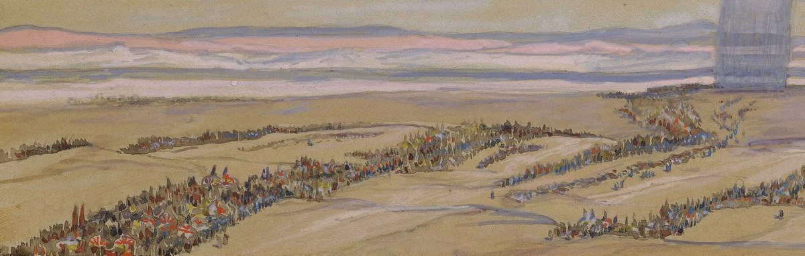
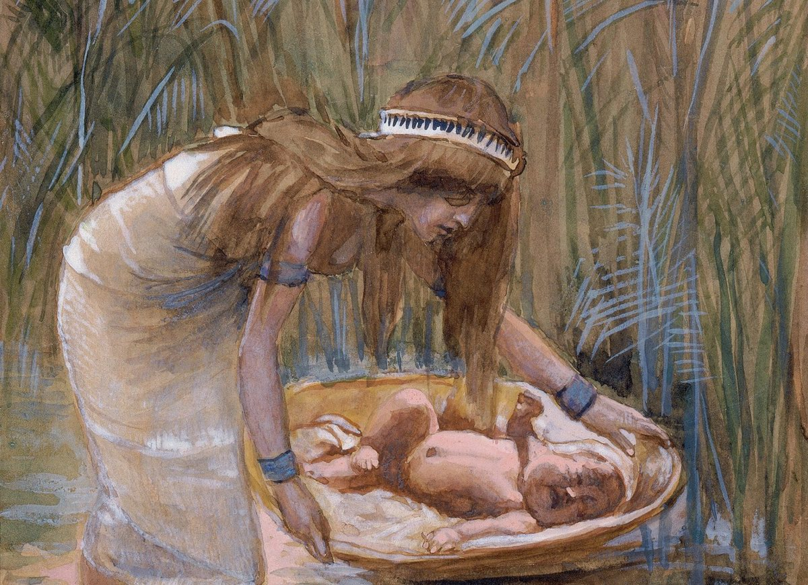
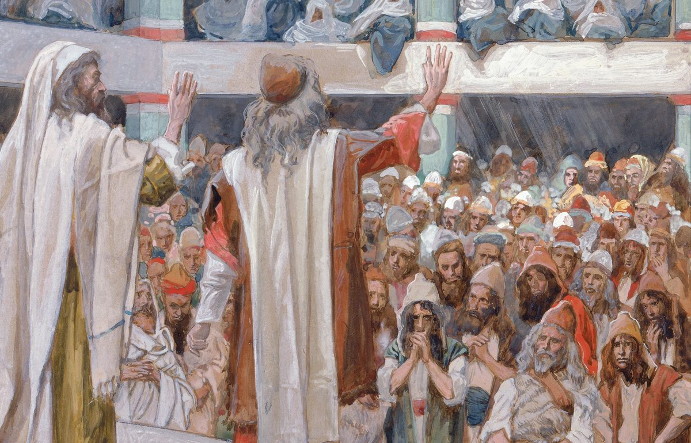
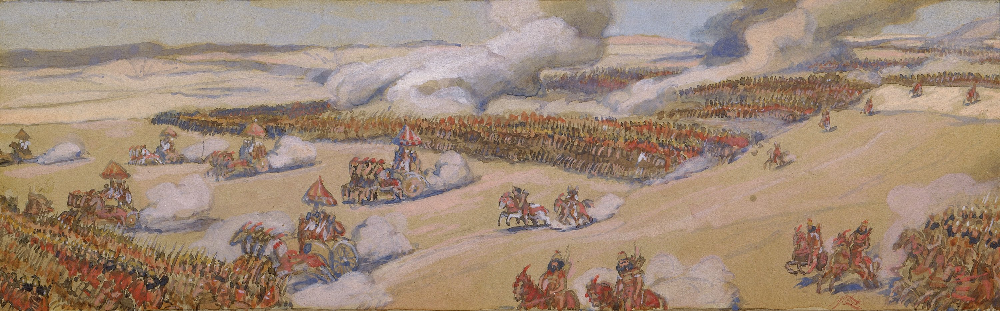

The Exodus from Egypt as Seen by James Tissot
After the success of "The Life of Christ", Tissot gave all his creative strength, to the end of his days, to an even larger project: to recreate in pictures the whole ancient biblical history, from the beginning of creation to the last of the prophets.

Daniel Kruglov: a musical interpretation of the weekly Torah portion "SHEMOT"
James Tissot's project "The Life of Christ" was a tremendous success. As far as was possible for a 19th-century artist, Tissot sought to recreate the times when the Saviour walked the land of Israel. He wanted those looking at his watercolours to feel not like spectators but like direct participants, drawn into what was happening. After the success of "The Life of Christ", Tissot gave all his creative strength, to the end of his days, to an even larger project: to recreate in pictures the whole ancient biblical history, from the beginning of creation to the last of the prophets.

The artist did not manage to carry out his plans in full. Death interrupted the work. He succeeded in making only a small part of what he had conceived. On the eve of Pesach, here are some of his illustrations to the Book of Exodus.

I am glad I managed to obtain reproductions in good resolution. As you look at them, I would like to remind you that their real size is a little more than half a printed page. The small format of his works shows that most of them were made, or begun, in the field, in the Palestine, Syria and Egypt of the late 19th century. Large formats, and in such quantities, when we are talking about hundreds of illustrations, are extremely inconvenient on the road.


Daniel Kruglov: a musical interpretation of the weekly Torah portion "BEHA'ALOTCHA"




***
Watch my new clip "EXODUS. Let my people go!" It uses James Tissot's watercolours for the books of Exodus and Genesis, and music by Daniel Kruglov written as interpretations of the weekly portions of the TORAH.
See also:
"James Tissot, Illustrator of the Bible"
James Tissot: "The Life of Christ"
Daniel Kruglov: Torah and the Language of Music
 Art in Israel. The "Textile in 3D" Exhibition
Art in Israel. The "Textile in 3D" Exhibition